Assignments
Problem: DJing often requires expensive equipment and software, which is hard for beginners to get started with. Even with the proper equipment, it is confusing and non-intuitive.
Solution: Using the computer's webcam and a LeapMotion device, DJing can be made simpler and truly virtual. The LeapMotion and camera will use computer vision algorithms to recognize specific hand motions and register them as inputs to a DJ program, such as VirtualDJ (through the use of a plugin). With this, the user can use simpler, intuitive gestures to select songs, queue up music, and make mixes!
The doodles below depict the basic setup for the app and sample gesture:
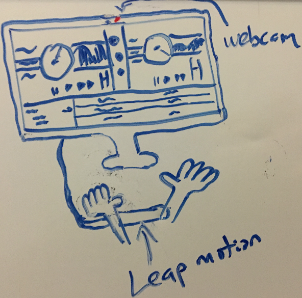
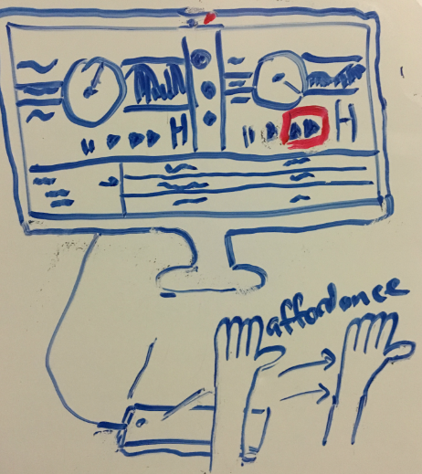
The affordances of this app are the hand gestures that the user makes to the camera. However, only some of these gestures will be registered as inputs. The app will respond by highlighting the specific control (play, pause, song selection) that the recognized gesture refers to. This feedback will indicate to the user whether the gesture was recognized. Since most DJ applications have 2 turntables, gestures with the left hand will control the left turntable and the right hand will control the right side turntable. The two turntables in the software serve as signifiers that indicate to the user that both hands are used to control the deck. Some sample inputs are as follows:
Examples of these inputs are shown in the doodle below:
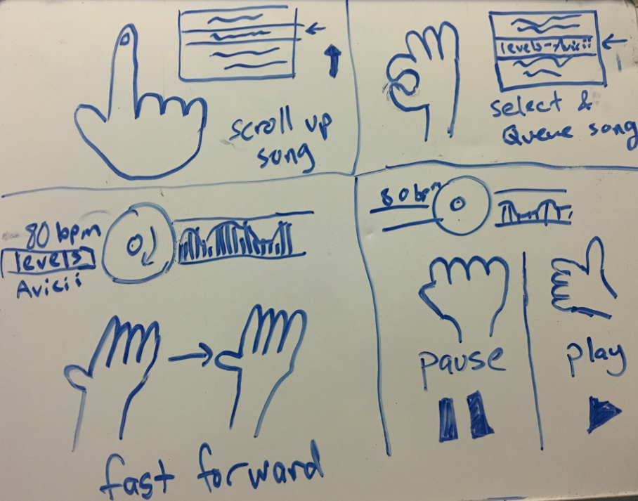
This app can be tested with users who are familar with DJing as well as beginners who want to try mixing songs. The use of the webcam and LeapMotion simplies the interaction with the software so that it is easy to learn and intuitive, making it great for beginners. The app would be best tested with users who are not savvy with the turntable hardware but know how to use the software and have an interest in making music.
Doing a case study with inexperienced users and comparing the results (ability to mix songs) with those who have DJ boards can produce quantifiable results to evaluate the success of the app. If these beginner users are able to easily manipulate the songs and make mixes as well as those who have the other hardware, the app would have successfully augmented the experience of the users and made it a true virtual experience.
Solution: Using the computer's webcam and a LeapMotion device, DJing can be made simpler and truly virtual. The LeapMotion and camera will use computer vision algorithms to recognize specific hand motions and register them as inputs to a DJ program, such as VirtualDJ (through the use of a plugin). With this, the user can use simpler, intuitive gestures to select songs, queue up music, and make mixes!
The doodles below depict the basic setup for the app and sample gesture:
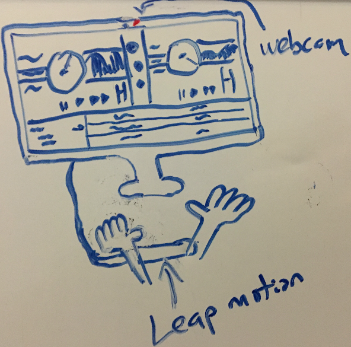
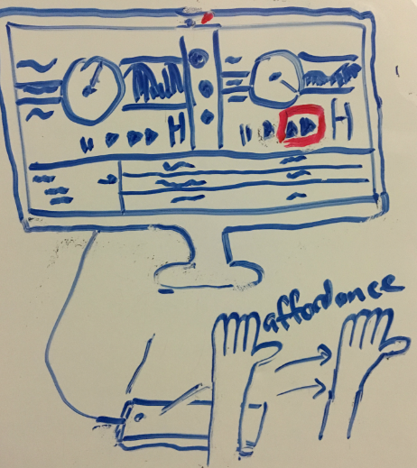
The affordances of this app are the hand gestures that the user makes to the camera. However, only some of these gestures will be registered as inputs. The app will respond by highlighting the specific control (play, pause, song selection) that the recognized gesture refers to. This feedback will indicate to the user whether the gesture was recognized. Since most DJ applications have 2 turntables, gestures with the left hand will control the left turntable and the right hand will control the right side turntable. The two turntables in the software serve as signifiers that indicate to the user that both hands are used to control the deck. Some sample inputs are as follows:
- Browsing Songs: point index finger up to scroll up songs; point index finger down to scroll down song selection
- Selecting Songs: Pinch index finger and thumb to select the highlighted song and queue it on the deck
- Fast Forward/Rewind: Move (flat) hand to the right to fast forward track, and left to rewind track
- Pause/Play: Make a fist to pause track, and thumbs up to play track
Examples of these inputs are shown in the doodle below:
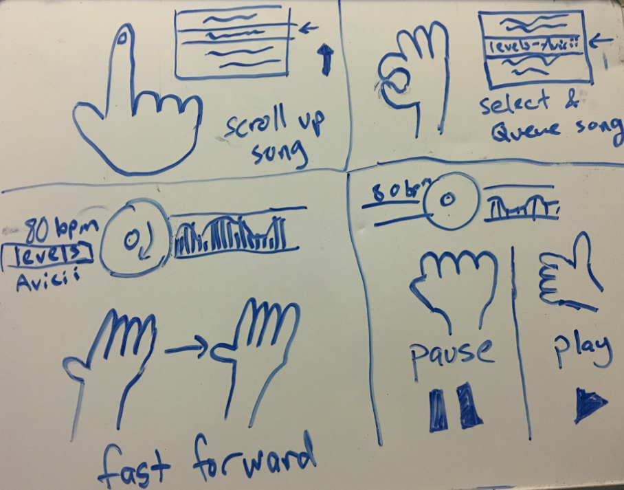
This app can be tested with users who are familar with DJing as well as beginners who want to try mixing songs. The use of the webcam and LeapMotion simplies the interaction with the software so that it is easy to learn and intuitive, making it great for beginners. The app would be best tested with users who are not savvy with the turntable hardware but know how to use the software and have an interest in making music.
Doing a case study with inexperienced users and comparing the results (ability to mix songs) with those who have DJ boards can produce quantifiable results to evaluate the success of the app. If these beginner users are able to easily manipulate the songs and make mixes as well as those who have the other hardware, the app would have successfully augmented the experience of the users and made it a true virtual experience.
Partnered with: Souranil Sen
For this assignment, we made a simple circuit consisting of an LED and a 100 Ohm resistor. As shown in the Fritzing sketch below, 5V is output from pin 2 which is used to power the red LED. The setup is a simple serial circuit, and the current is: 100 Ohm / 5V = 50mA.
We wired 3 series circuits (using 3 different output pins) so that the LEDs can flash in a pattern for a cooler effect. Below are our results along with a low exposure shot for "light painting".

For this assignment, we made a simple circuit consisting of an LED and a 100 Ohm resistor. As shown in the Fritzing sketch below, 5V is output from pin 2 which is used to power the red LED. The setup is a simple serial circuit, and the current is: 100 Ohm / 5V = 50mA.
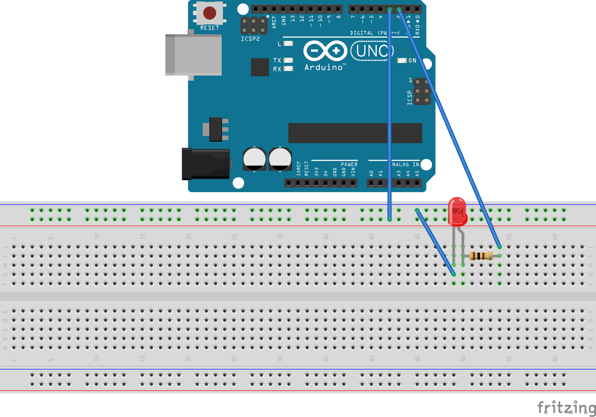
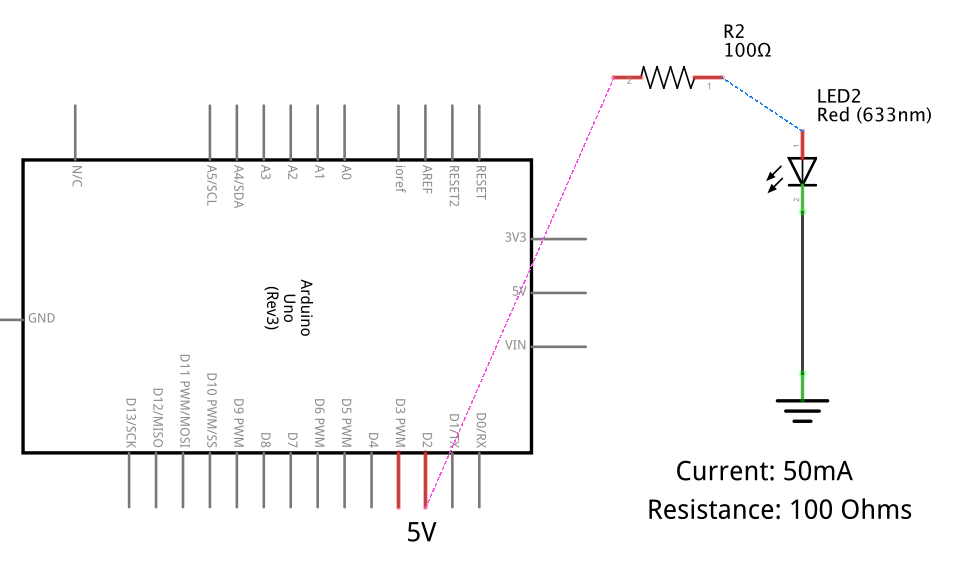
We wired 3 series circuits (using 3 different output pins) so that the LEDs can flash in a pattern for a cooler effect. Below are our results along with a low exposure shot for "light painting".
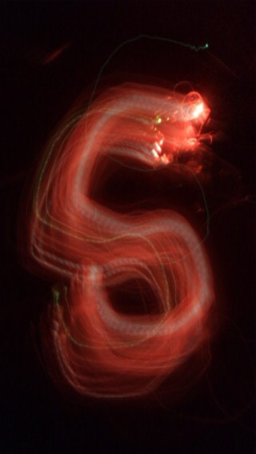
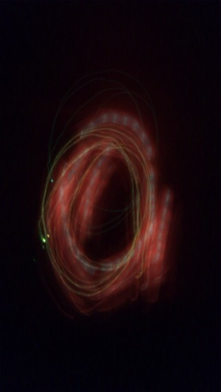
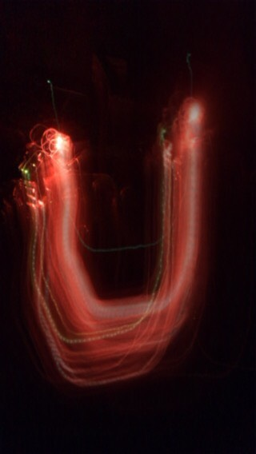
Partnered with: Souranil Sen
In this part, we made a circuit consisting of a photoresistor and an LED, driven by PWM to control brightness. The photoresistor was wired with a voltage divider and read through analog input 0. With this reading, we used the map function to constrain the raw data to be between 0 and 1023, for PWM output. The LED was driven with PWM, reflecting the corresponding brightness level. Our map function used a hand-measured minimum and maximum value as contraints rather than the actual minimum that can be read from the sensor (0) so that the LED can be turned completely off and on by completely covering or flashing light on the sensor. Below are the circuit diagram and schematics.

With this setup, we recorded the raw analog values read and calculated the corresponding voltage out and lux values. Our recorded data is uploaded on a spreadsheet here.
We used a hardware RC filter consisting of a 100 Ohm resistor and capacitor to smooth out the jittery readings from the photoresistor:
With a 100 Ohm resistor and 0.1 micro Farad capacitor, the cutoff frequency will be 15.9 kHz. The diagram on the left shows the raw analog readings readings while the diagram on the right shows the readings after RC circuit smoothing.
Our code for reading the input and caluclating lux is below:
In this part, we made a circuit consisting of a photoresistor and an LED, driven by PWM to control brightness. The photoresistor was wired with a voltage divider and read through analog input 0. With this reading, we used the map function to constrain the raw data to be between 0 and 1023, for PWM output. The LED was driven with PWM, reflecting the corresponding brightness level. Our map function used a hand-measured minimum and maximum value as contraints rather than the actual minimum that can be read from the sensor (0) so that the LED can be turned completely off and on by completely covering or flashing light on the sensor. Below are the circuit diagram and schematics.
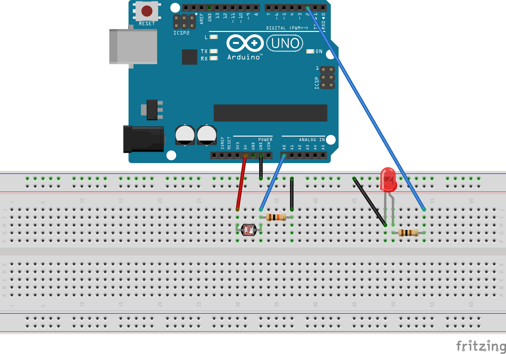
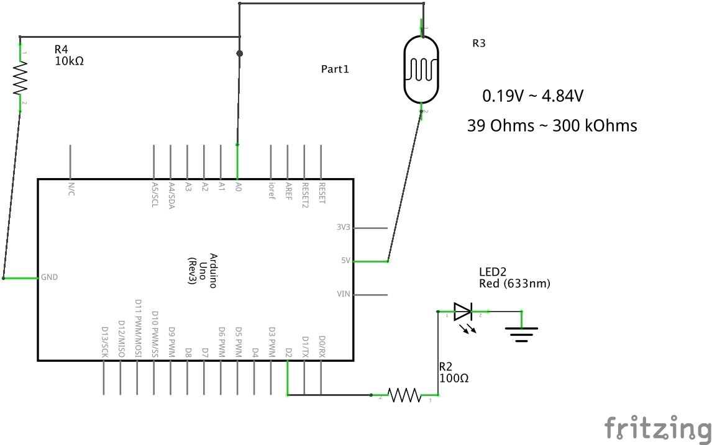
With this setup, we recorded the raw analog values read and calculated the corresponding voltage out and lux values. Our recorded data is uploaded on a spreadsheet here.
We used a hardware RC filter consisting of a 100 Ohm resistor and capacitor to smooth out the jittery readings from the photoresistor:
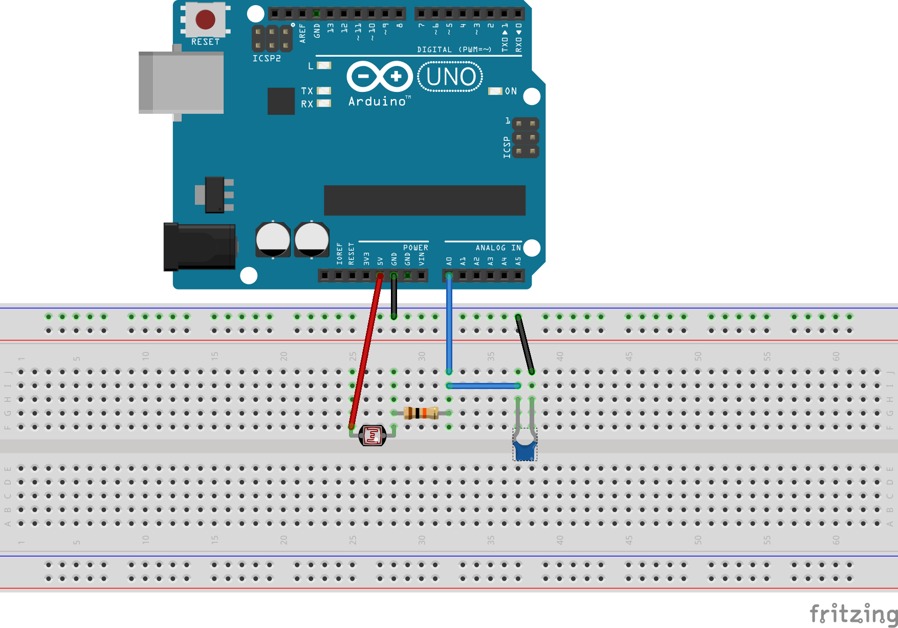
With a 100 Ohm resistor and 0.1 micro Farad capacitor, the cutoff frequency will be 15.9 kHz. The diagram on the left shows the raw analog readings readings while the diagram on the right shows the readings after RC circuit smoothing.
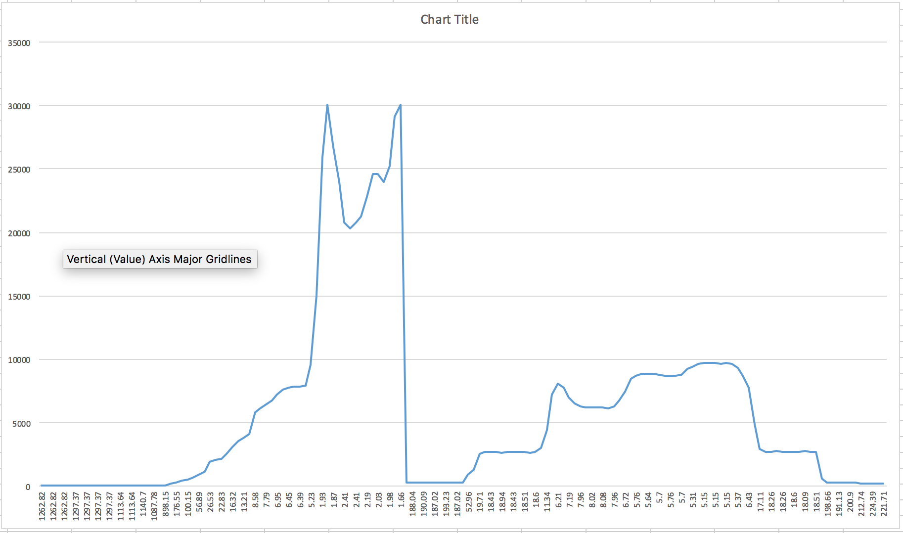
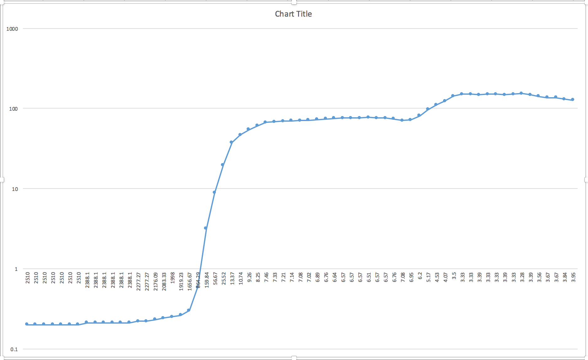
Our code for reading the input and caluclating lux is below:
const int analogInPin = A0; // Analog input pin that the potentiometer is attached to
const int analogOutPin = 11; // Analog output pin that the LED is attached to
int sensorValue; // value read from the pot
int outputValue = 0; // value output to the PWM (analog out)
float vOut = 0;
float rLDR;
float lux;
float freq;
void setup() {
// initialize serial communications at 9600 bps:
Serial.begin(9600);
}
void loop() {
// read the analog in value:
sensorValue = analogRead(analogInPin);
// map it to the range of the analog out:
outputValue = map(sensorValue, 0, 1023, 0, 255);
// change the analog out value:
analogWrite(analogOutPin, outputValue);
vOut = sensorValue * 0.0048828125;
rLDR = (10.0*vOut)/(5.0-vOut);
lux = (250/vOut) - 50;
freq = 1/(2 * 3.14 * rLDR);
// // print the results to the serial monitor:
Serial.print(sensorValue);
Serial.print("\t ");
Serial.print(vOut);
Serial.print("\t ");
// Serial.print(outputValue);
// Serial.print("\t ");
Serial.print(rLDR);
Serial.print("\t ");
Serial.print(lux);
Serial.print("\t ");
Serial.println(freq);
delay(100);
}
Partnered with: Souranil Sen
In this assignment, we used Inkscape and an online tool, http://www.makercase.com, to make a case for the Arduino Uno. We chose to use finger edge joints for the case because it does not require any adhesive or screws to assemble. We found a sketch of the arduino online, which provided us accurate measurements of the dimensions of the Arduino (shown below). We estimated the laser kerf to be 0.18mm for 3mm Acrylic (Source). Taking the laser kerf into account, we generated the box using the tool and the measurements.
More Information
In this assignment, we used Inkscape and an online tool, http://www.makercase.com, to make a case for the Arduino Uno. We chose to use finger edge joints for the case because it does not require any adhesive or screws to assemble. We found a sketch of the arduino online, which provided us accurate measurements of the dimensions of the Arduino (shown below). We estimated the laser kerf to be 0.18mm for 3mm Acrylic (Source). Taking the laser kerf into account, we generated the box using the tool and the measurements.
More Information
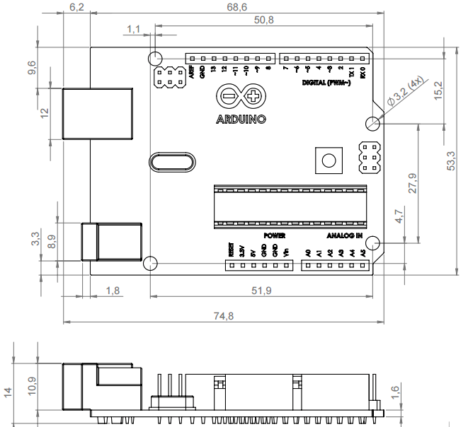
The goal of this assignment is to get acquainted with FreeCAD modeling and Blendr. I made a very simple "mouse" to learn how to use these tools. Below are my results from modeling on FreeCAD and rendering the object in Blendr:
mouse.obj
mouse.obj
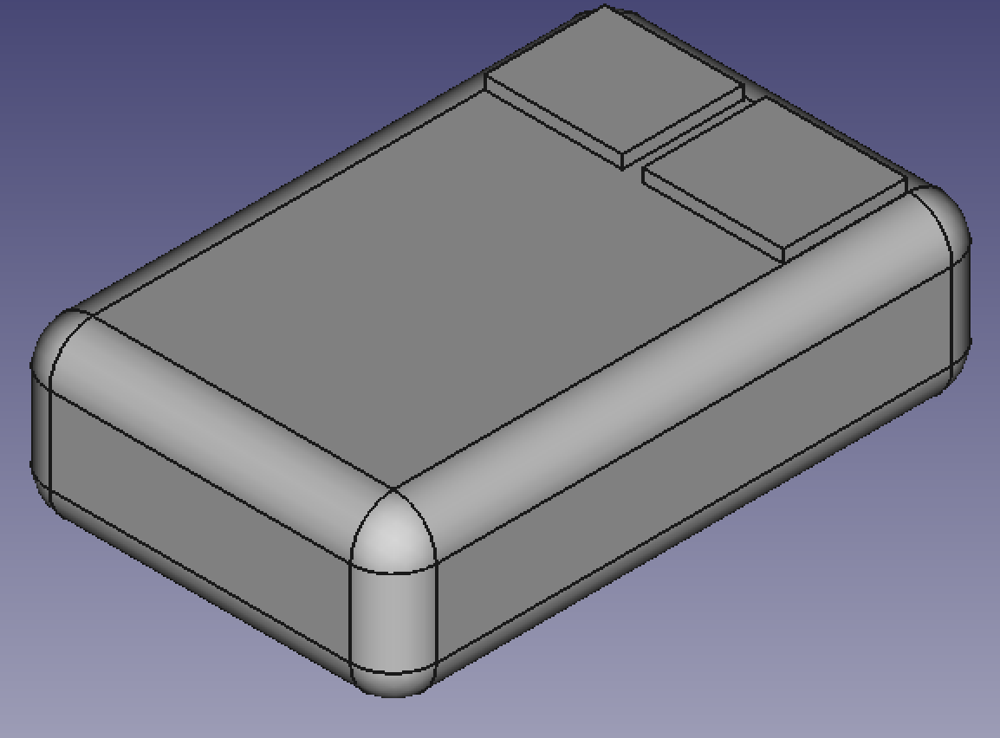
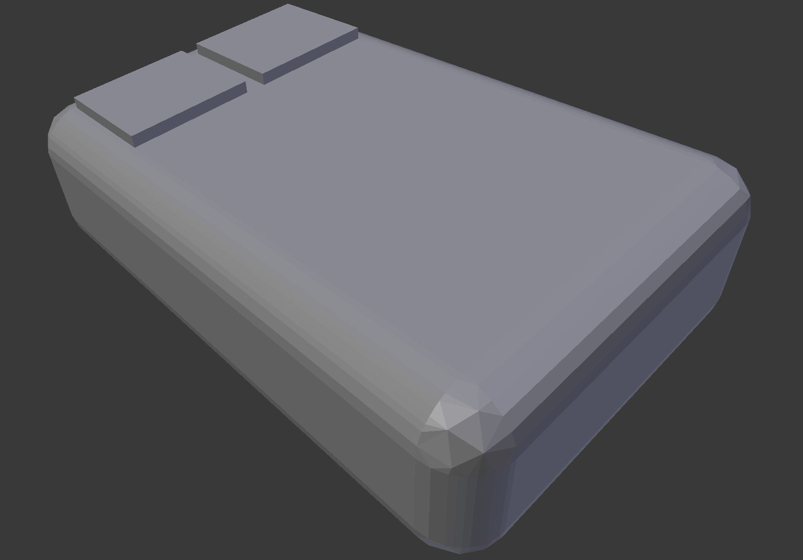
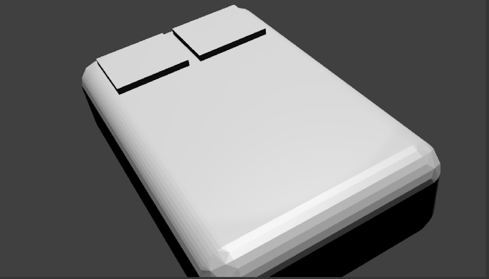
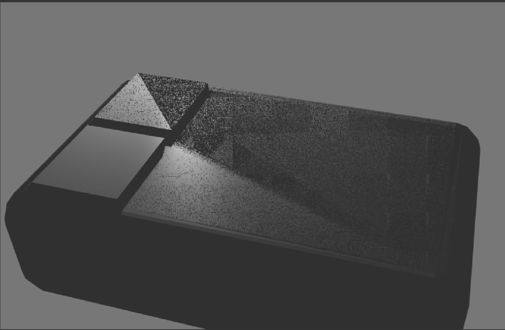